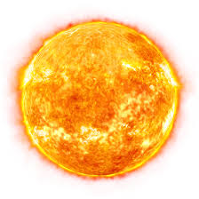
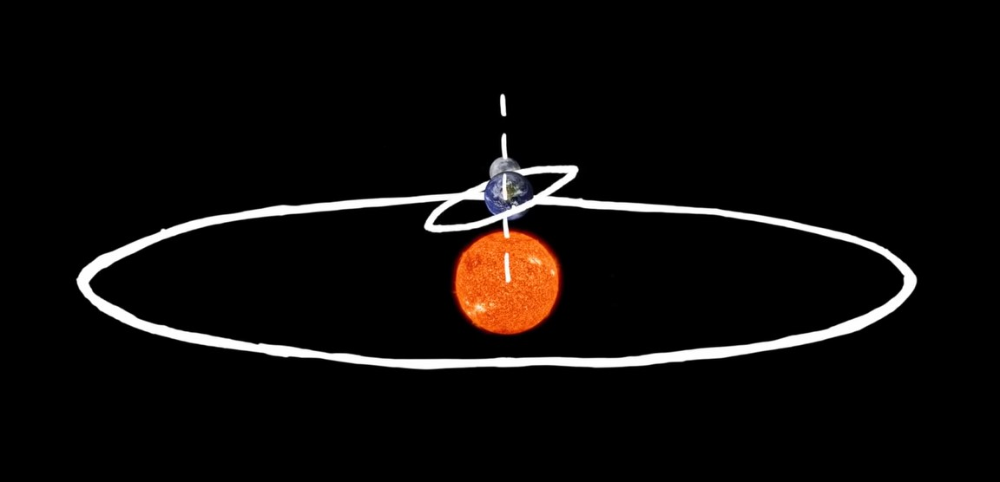

Solar & Lunar Eclipse


SOLAR Eclipse
Up above you can see the order of the Sun,earth and moon during a solar eclipse. SME
If theres a solar eclipse going on you look at the sun, with special glasses so you dont BURN your retina
A solar eclipse happens when the moon passes beetween the sun and earth!
 Heres what a total solar eclipse looks like!
Heres what a total solar eclipse looks like!
LUNAR Eclipse
Up above you can see the order of the Sun,earth and moon during a lunar eclipse. SEM.
If theres a lunar eclipse going on you look at the moon, with your naked eye, its fine.
A lunar eclipse happens when the earth gets in beetween the sun and the moon
Heres what a lunar eclipse looks like!
More On Eclipses:
Hint:The word 'eclipse' means an obscuring of thhe light from one celestial body. So, solar eclipse sun(sol in latin) is eclipsed, lunar eclipse moon(luna in latin) is eclipsed
Note: We see lunar eclipses much more often than solar eclipses. ITs bc earth is so much bigger than moon, the entire nightime side can see lunar eclipse
however, during a solar eclipse the sun is a lot bigger than moon, e.g: only this part can see the eclipse

5 facts:
1.The orbit for the moon and earth is tilted
and the orbit of earth and sun is straight, so only when its in this position an eclipse happens

2. If 2 Lunar eclipses happen during the same year they are 177 days apart approx.
3.there are 60 TOTAL solar and +TOTAL lunar eclipses that happen every century
4
. If you were on the moon a solar eclipse would be a lunar eclipse, you would see the sun go away, from ur POV thats a lunar eclipse. and from earth we would see an obscured sun
5. the next total solar eclipse is on december 4th this year! But you have to go to antartica to see it